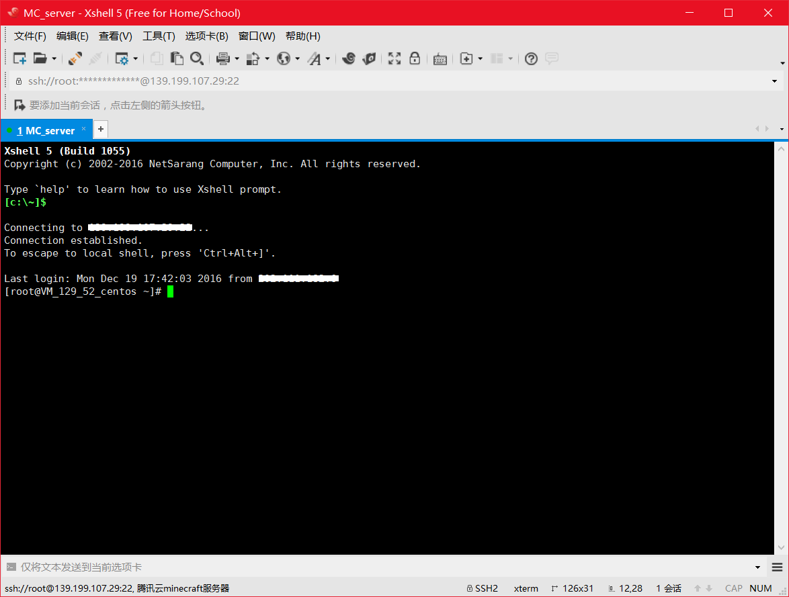
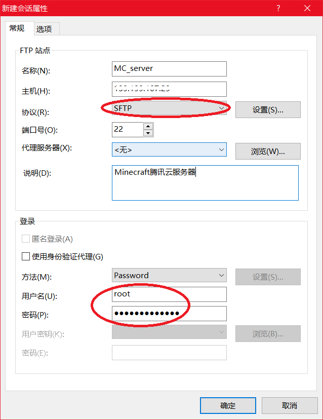

接着上一篇教程Minecraft个人私服搭建指南（上），在准备好服务器和控制端之后，通过Xshell软件来远程访问控制云端服务器，然后我们需要给这个空空的服务器搭建好环境。
前排提示：教程从此处开始出现linux操作指令代码，如有疑问和搞不明白的地方，强烈建议打开浏览器使用搜索引擎查找相关词条。另外，注意空格。
服务器系统更新
不管你在申请服务器时选了什么版本的服务器系统，请在配置服务器之前更新一下系统组件，以免遇到不必要的问题。首先是按照上一篇的教程结尾示范，使用Xshell登录到远程服务器。

更新CentOS服务器系统组件，使用一下指令进行：
|
|
最后显示 “Complete!” ，结束之后再输入一下内容：
|
|
等待结束后系统更新完事。
Java环境和Screen工具
配置Java环境
Minecraft这款沙盒游戏的运行，必须有Java环境支持，在服务器上要运行Minecraft服务端，也需要先配置Java环境。本教程推荐直接yum命令装配Java环境，更加方便。
上一流程结束后，在远程界面中输入一下内容来在yum库里查找java安装包：
|
|
之后你会看见这样的查找结果：
选择一个较为新的版本，比如我们选用“java-1.8.0-openjdk”系列的安装包，输入一下安装命令：
|
|
等待最后出现 “Complete!” 这样就将“java-1.8.0-openjdk”所有先关的程序安装完成。完成之后输入以下内容验证Java环境已经成功配置：
|
|
结果如下图所示的话，就意味着Java环境配置成功。
安装Screen工具
然后我们还需要一个神奇的工具——screen。全称GUN Screen，就是这个东西。简单来说的话，就像是用来虚拟出屏幕（其实叫终端窗口），来跑某个程序，比如我们即将要用的Minecraft服务端，来保证即使我们断开服务器再次连接也可以继续执行对于服务端的命令操作。
你只需要在Xshell远程界面中输入一下命令来安装Screen：
|
|

同样，等待最后出现 “Complete!” 表示完成安装。
至此，我们的云服务器基本已经完成配置，准备运行Minecraft服务端。接下来我们将要用Xftp上传服务端文件，配置并运行服务端。
搞到手一个服务端文件
就像你玩网游之前要在电脑上安装客户端一样，要搭建Minecraft服务器你要在你的服务器上安装配置好一个Minecraft服务端。Minecraft的服务端可在网上自找资源，有好多版本以及第三方mod可供选择。本教程使用官方原版服务端（不含第三方mod）,点击这里下载服务端。
注意：你的服务端版本号必须要与客户端版本号一致才能正常连接使用，请安装配置前再三确认。
当然，你也可以自己选择喜欢的版本和第三方mod进行配置，大致方法没差。
把文件上传到云服务器上
拿到手你的服务端之后，我们要做的是吧这个服务端文件上传到我们配置好的云服务器上。
打开上一篇教程中在电脑上安装的Xftp（如果不记得有这个东西的话往上一篇翻看一下）软件，然后点击“新建”。
与上篇教程中新建连接大致一样，在【新建会话属性】里，【名称】看心情随意填，【主机】一样填入服务器公网ip地址，注意【协议】要选择【SFTP】，【说明】随意填写。登录中填写上篇教程中申请服务器时设置的用户名（root）与密码，确定。

之后点击【连接】，就可以接入我们的云服务器。连接进去之后，软件界面左边是你电脑本机的资源管理器，右边是你云服务器的资源管理器。接下来就可以向服务器传文件了。
在右边云服务器资源管理器，按照下图，在上方路径框里输入 /home ,回车，在界面里右键【新建】，【新建文件夹】，字母命名（可加下划线）如“mc_server”，双击点进。
在左边电脑本机资源管理器中找到你下载好的服务端文件，右键点击“传输”。
上传完成之后，断开连接退出即可。
远程配置运行服务端文件
进入最后一个步骤，一切就绪之后就我们就可以配置运行服务端文件。
通过Xshell远程登录到你的云端服务器，然后我们先创建一个Screen进程，命名为mc，用来启动和运行我们的服务端，在远程操作界面输入：
|
|
在mc这个Screen进程中，首先切换到我们服务端的上传目录：
|
|
然后建立服务端启动脚本：
|
|
回车弹出新建的start.sh文件编辑器窗口，输入一下内容：
|
其格式可理解为：#!/bin/sh java 【最大内存占用】 【最小内存占用】 -jar 【文件路径】 【服务端全称】
注意：空格不要漏掉
输入完成之后按 Ctrl+X，然后输入Y，最后回车完成编辑。
完成start.sh脚本编辑之后，输入一下内容查看当前目录下文件：
|
|
再输入以下内容，赋予脚本执行权限：
|
|
然后，我们需要修改一下EULA文件来让start.sh脚本顺利运行，输入：
|
|
进入编辑器，将 “eula=false” 改为 “eula=true”。
同样完成之后按 Ctrl+X，然后输入Y，最后回车完成编辑。

以上操作完成之后，输入以下命令启动服务端：
|
|
启动完成之后，就会看到以上的界面，这个界面就意味着服务端成功运行，Minecraft服务器就成功上线啦。
还有一些后续设置工作
现在我们的Minecraft服务端已经算是成功上线，接下来还需要一些后续设置工作。
首先，我们先暂时关掉我们的服务端，按下 “Ctrl+C”，输入：
|
|
在编辑器里修改要修改的一些选项来设置Minecraft服务器，比如相对必要的设置：去掉正版验证，将其中 “online-mode=true”改为“online-mode=false”。
关于服务端properties详细参数设置，还请大家自行搜索，参数名称都是是英文，相信大家的水平完全可以看懂都是哪些参数，当然也可以发挥一下英语词典的用处。
重新设置之后再次输入 “sh ./start.sh” 启动服务端就可以啦。
启动完成之后可以直接关掉Xshell软件结束远程控制，下次再次启动连接之后，输入：
|
|
这样就可以回到我们命名为mc的Screen进程中。
至此，我们的Minecraft私服已经完整上线开放了，在本地启动我们的Minecraft客户端，选择“多人模式”，人后选择“添加服务器”，看心情命名服务器名称，服务器地址就是整个教程远程连接一直用的那个公网ip地址。之后就可以加入服务器玩耍啦。
别的小伙伴同样可以通过添加服务器的方式连进去。接下来，一起在Minecraft私服里玩耍吧！